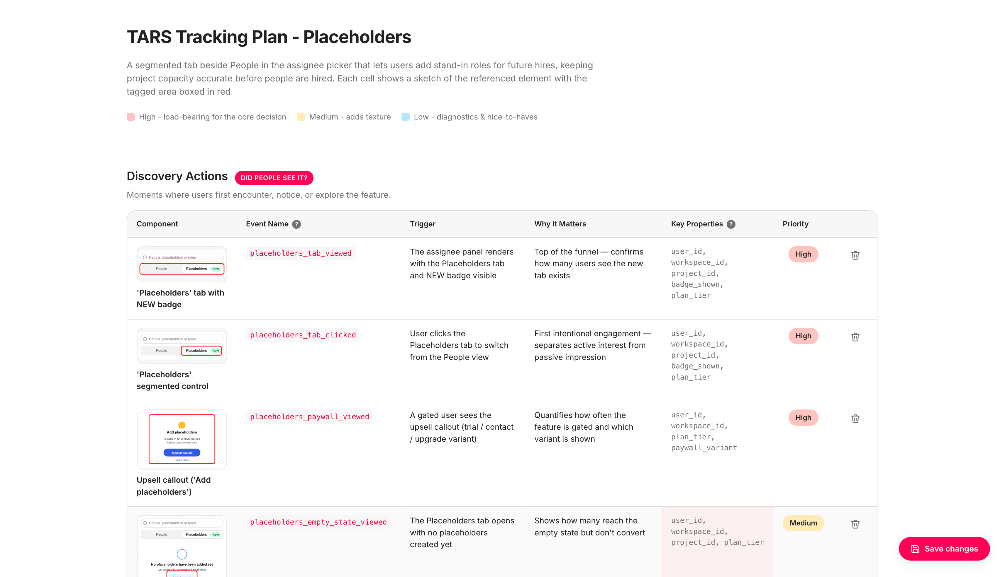
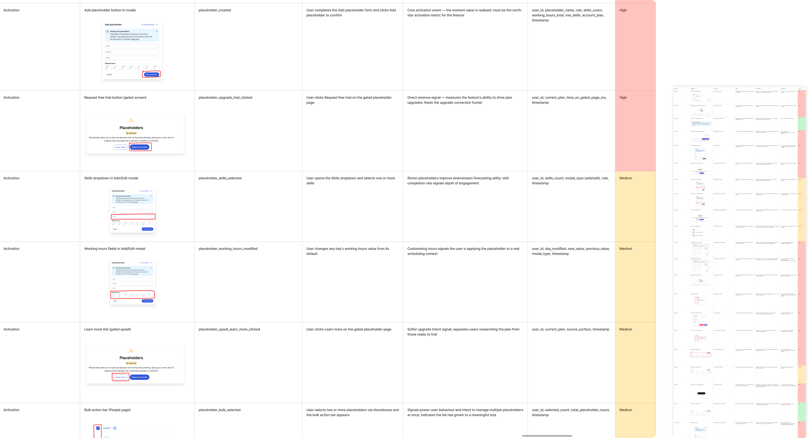
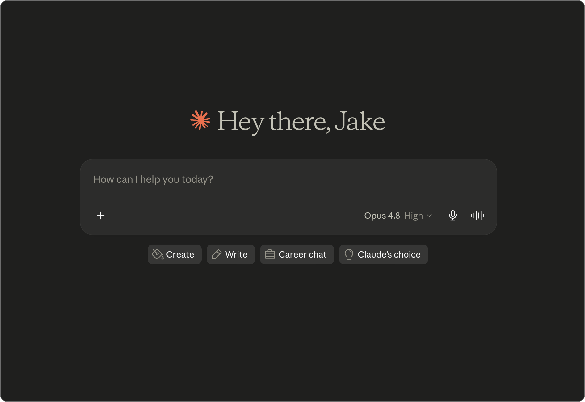

Internal tool — Metric tracking
Automating metric tracking with AI

Quick read
Project overview
Reforge's TARS framework — Target, Adopted, Retained, Satisfied — defines what a successful feature looks like. But it only works if the right events are tracked in the first place, and setting up that tracking was the slowest, most manual part of shipping any new feature. I built a tool that automates the grunt work while keeping me as the decision-maker on what gets measured.
Responsibilities
Concept, design, build (self-initiated)
Target users
Designers, PMs and developers setting up feature analytics
Problem statement
Setting up tracking was slow, manual, and easy to skip under pressure.
Before launching anything, I needed to define what to track so the TARS funnel could be measured. The hard part was never the tagging — it was identifying what deserved tracking and communicating it clearly to developers. I tried annotating flows, then building tables by hand: screenshotting each component, highlighting what to track, writing up event names and rationale one by one. It worked, but it was slow, repetitive, and didn't scale.
Current known pains
- Identifying what to track was manual and subjective
- Screenshotting and highlighting each component by hand
- Writing event names and rationale one by one
- Tracking got rushed or skipped under deadline pressure
- Inconsistent event naming across features
- Handoff to devs was a separate manual step

Approach
Automate the labour, not the decision.
I didn't want to hand the decision over to automation. Choosing what to measure is a design and product judgement call. The goal was to remove the manual labour around the decision, not the decision itself.

Solution
Design & Build
Using Claude Code, I built a tool that reads a Figma file via the Figma MCP, locates the relevant components, and extracts them as SVGs into a structured table. For each component it draws a box around exactly what to track and surfaces the event name, the rationale for why it's worth tracking, a priority level, and where the developer needs to implement it. It outputs either an HTML page or a CSV.
Core principles
- Designer stays the decision-maker on what's tracked
- Every tracked item carries a reason and a priority
- Output doubles as a dev handoff with implementation location
- HTML output is editable, not static
The HTML version isn't just a spec to hand off — it's a working surface. Rows can be edited inline, deleted, or re-prioritised, and you can upload your own images. That turns a static tracking doc into a collaboration artefact: I attach it to a developer task, but it also becomes where I brainstorm with developers, PMs and the wider team — here's what I want to track, what are your thoughts? The plan and the conversation live in the same place.
Metrics
Faster setup, more reliable tracking
Automating the manual parts of tracking setup freed up time, reduced errors, and made instrumentation something that ships with every feature — not just when there's bandwidth.

~90 → 10 min
Faster setup per feature
Initial tracking setup per feature went from a manual screenshot-and-annotate task to a quick review

100%
Features ship with tracking
Consistent event naming and complete coverage now ship with every new feature, not just when there's time

1
Source of truth
The editable HTML output doubles as a live collaboration surface for devs and PMs, not just a handoff doc
Outcomes
Learnings and reflection
Automating the tracking setup removed one of the most friction-heavy steps in launching a feature. What used to take the best part of a day — annotating flows, building tables manually, writing rationale — became a guided review of a generated output.
The shift in focus from producing the plan to reviewing it changed how tracking conversations happened. It became easier to involve devs and PMs earlier, and the shared artefact meant everyone was working from the same source of truth.
What changed
- Tracking setup went from hours to minutes
- Instrumentation now consistent across features
- The plan became a shared team artefact
What I learned
- Automating the labour while keeping the judgement is the right line to draw
- A reusable output format saves more time than any single setup
- Making tracking easy is what makes it actually happen